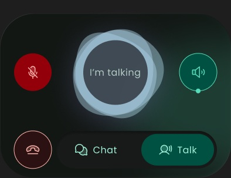
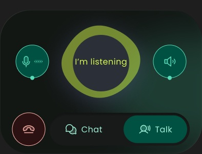
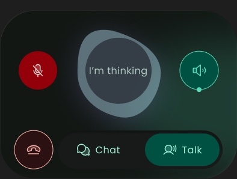
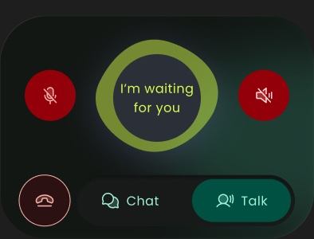
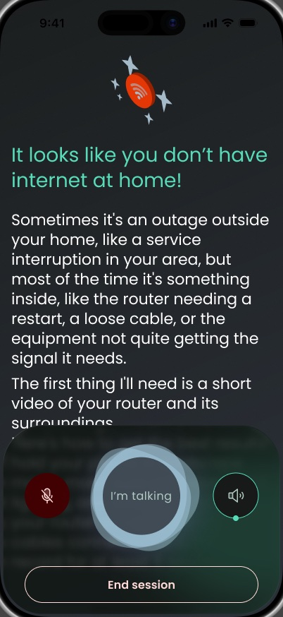
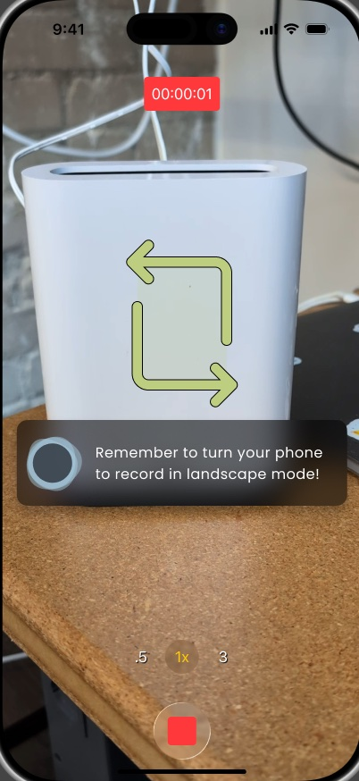
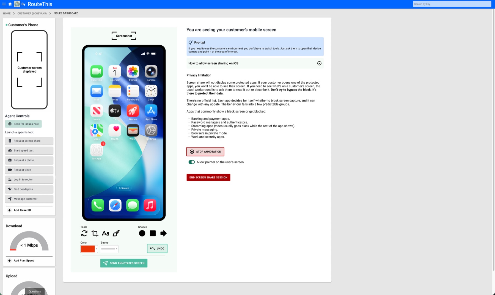

Rava: turning a WiFi support app into an AI voice agent
Support calls resolved without a human agent, through providers’ phone systems
How I led design on the team that made fixing your internet on your own a better option than calling your provider.
Role
Lead Product Designer
Team
Sole designer, in a triad with a PM and a tech lead, plus each project’s developers
Timeline
2022–2026
Scope
Mobile app (from static to voice AI, plus chat in design), agent desktop platform
00.1
00.2
TL;DR
Problem
Every support call costs an internet provider money, yet people still preferred calling to using the static RouteThis Helps app.
My contribution
Led design from a static help app to Rava, an AI voice agent: the research, a pilot to test the idea, the voice interface, and the handoff to the ISP’s support team as a last resort.
Impact
Incoming support calls resolved by Rava without a human agent, through providers’ phone systems (IVR). When Rava can’t fix it, a person takes over.
01 / ContextCase study 01 / Rava
01
Context
01.1
People trusted a phone call more than the app
When your internet drops, the usual fix is to call your provider, wait on hold and repeat yourself. RouteThis Helps was meant to replace that call, but it showed generic, text-heavy help, and product decisions followed customer requests rather than user needs. People didn’t trust it, and kept calling.
01.2
From static app to Rava
Static help appBefore 2022
Personalized redesignMaterial Design, personas
Pick-list AI pilot3 months
Rava voice agentIntegrated with phone systems (IVR)
Chat modeIn design, Nov 2026
02 / The real problemResearch
02
The real problem
What research showed before any design work began.
02.1
The question the team set out to answer
How might we make troubleshooting with the app a more attractive option than calling a support agent?
02.2
Long, generic help reads as unhelpful.
Give personalized steps, in small pieces.
02.3
Calling feels easy because you just explain the problem.
The app needed a conversation, not a menu of tools.
02.4
Numbers read as promises. Seeing results in Mbps made people on faster plans call to complain.
Show what people can act on, not raw speed.
03 / My role & influenceSole designer / Product triad
03
My role & influence
03.1
Team
Sole designer, in a triad with a PM and a tech lead, plus each project’s developers.
03.2
Research
I ran user interviews at each stage and interviewed customer-service agents to build the company’s first proto-personas, which later became the official personas. Two call-centre visits, one in an earlier telecom job and one the product team organized with a customer, added the agents’ view.
03.3
Before AI
First, an app people could trust
Before adding AI, the basics had to work. With engineering, we chose Material Design as a consistent UI foundation for a product with heavy technical debt and no design system, and I redesigned the help content to be personalized and short.
03.4
The AI turn
Testing whether people even wanted to talk to an AI
Natural language looked like the missing piece. When the company decided to explore voice, I led the design effort. First, the team ran a 3-month pilot of a simpler pick-list AI experience with end users from two ISP customers. I interviewed some of the people who used it: they were pleasantly surprised, even amused, which gave the company the confidence to build voice.
04 / Key decisions & tradeoffs4 decisions
04
Key decisions & tradeoffs
04.1
123
The certificate pathConnects to Certify after an install.
Named by goalNot a menu of tools.
“I’m on a call with an agent”A way in for people already on the phone.
04.1
One app, clear ways in
Context
People arrive at very different moments, often from an SMS the IVR sends.
Decision
People coming from the IVR get a deep link to the right solution path after triage. For returning users who open the app directly, the home screen is split by intent: fix a connection, improve WiFi coverage, see my WiFi certificate, or “I’m on a call with an agent”.
Why
The goal is to minimize decision-making and cognitive load. Letting people name their goal in their own words removes the need to navigate a menu of tools, and returning users can skip the phone line entirely.
The certificate path connects to Certify: after a technician installs the home internet and certifies the install, Rava walks the customer through it. Case study 02
04.2
123
The spoken words, on screenAlways, as Rava talks.
One orb, four statesWhen to speak, when to wait.
End sessionAlways visible.
04.2
Always show what Rava is doing
Context
In testing, people talked over Rava or thought it had frozen.
Decision
One animated orb with four states, the spoken words always on screen, and End session always visible.
Why
People need to know when to speak and when to wait, especially when AI response times vary.

Talking

Listening

Thinking

Waiting for you
04.3


04.3
When talking isn’t enough, Rava looks at the router
Context
Most outages start inside the home, like a router that needs a restart or a loose cable, and people can’t always describe that.
Decision
Rava asks for a short video of the router and its cables, with recording tips, and analyzes it.
Why
A video shows what a description can’t, without a technician visit.
04.4
04.4
When Rava can’t fix it, a person takes over

123
The customer’s screenShared live with the agent.
One platformLaunch a speed test, photo or video.
AnnotateMark up the screen and send it back.
Context
An AI that traps people loses their trust.
Decision
Rava offers one quick fix first; asking again hands off with one tap. Agents can share and annotate the customer’s screen, or launch a speed test, photo or video, from one platform. The design also passes agents a summary of what Rava already tried, so people don’t have to repeat their story; that part isn’t live yet.
Why
Asking twice keeps Rava useful without ever feeling like a wall.
Same conversation, same rules, typed instead of spoken. People can switch between Chat and Talk at any point, every tool works in chat, and each moment the AI can’t handle has its own design.
See how chat mode works →
05 / OutcomeResults
05
Outcome
05.1
Headline result
Resolved without an agent.
Incoming support calls resolved by Rava, through providers’ phone systems (IVR).
05.2
Influence
The company’s personas
The proto-personas I built from user and customer-service interviews became the company’s official personas.
05.3
What’s next
Chat mode
In design: the same conversation, typed instead of spoken. Case study 03
05.4
“She found the flow helpful, and Rava kept customers on topic when they wandered off subject.”
Account Manager, relaying feedback from the testing pilot
06 / Reflection2 + 2
06
Reflection
06.1
What I learned
Emotions shape product use more than you might expect. People decide fast whether to trust an AI agent, based on their past experiences.
Talking to an AI can add cognitive load. People know what to expect from a human; they don’t yet know what to expect from an AI.
06.2
What I’d do differently
Push harder for the design system in code. Developers need to adopt it early; I accepted hardcoded screens when I should have pushed back.
Build relationships with CX and Sales from day one. They know a lot about users, and they’ll kindly critique your designs if you ask.